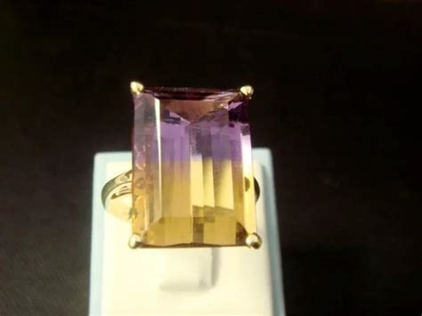

What is not a myth: Bolivianite is a beautiful purple and honey-colored precious gem formed under almost impossible conditions. It is a unique blend of purple amethyst and yellow citrine which scientists are now calling ametrine. It is produced under such exceptional and improbable conditions, requiring a perfect combination of iron presence and differing temperatures within a very confined area, that it has occurred only once that we know of, in only one known place in the world: Santa Cruz, Bolivia. The Anahí mine is the one and only bolivianite mine known to exist anywhere on Earth.
Legend has it that along with an expedition of Spaniards exploring what is now Eastern Bolivia, came a soldier called Felipe de Urriola y Goitia, who made contact with the peaceful Ayoreo tribe. The daughter of the Ayoreo chieftain, Princess Anahi, fell in love with Don Felipe and asked her father’s permission to marry him. The chieftain agreed and as a dowry, he gave her husband as a mine that produced a beautiful two-colored gems, to which the conquistador didn’t pay attention, deeming it not as worthy as gold, silver or emeralds.
When Don Felipe thought it time to go back to Spain, Anahi was torn between her loyalty to her tribe and her love for don Felipe, but was prepared to follow him anyway. Enraged by what they saw as abandonment, and jealous of Don Felipe, her tribesmen conspired to murder him to prevent him from leaving. However, Princess Anahí warned him and he and his men were forced to flee. Sadly, during the confrontation, Anahí was injured by her own tribesmen. Dying of her wounds, Anahi asked to see her husband one last time, and placed in his hands a beautiful stone from the mine her father had given them as a wedding gift. She told him it was a token of her eternal love. Anahí died in her husband's arms. When he opened his hands and saw the gem, he knew that the stone's two-colored blend of perfectly blended deep purple and honey symbolize Anahi's heart torn between her love for her husband and her love for her people.
That gem is what is now called Bolivianite, and the mine that produces it is named the Anahi Mine, after the Ayoreo princess. It is located 150 kilometers North of Puerto Suárez, a town in the Eastern tropics of Bolivia, very near the border of Brazil. The mine site covers an area of about 6250 acres. This is the very best video I have EVER seen about bolivianita (ametrine). In this video you can see the actual mine, its location, how the miners work, how the gems are processed and cut and turned into amazing, beautiful jewelry today in Bolivia: